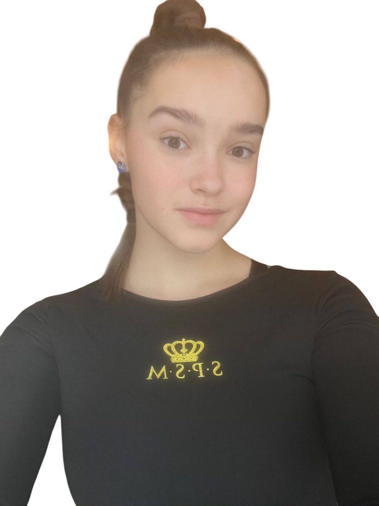

Я хочу поделиться своей базой знаний, продемонстрировать разные тренировки для улучшение гибкости,
растяжки, предметной подготовки и тд..
Для начала расскажу о себе:
- Я являюсь мастером спорта по художественной гимнастики;
- Призёр межрегиональных соревнований в групповых упражнениях;
- Состояла в Сборной Москвы в групповых упражнениях;
- Ученица центра художественной гимнастики Ирины Александровной Винер;
- Воспитанница тренера сборной России Титовой Марии Павловной(МСМК);

*Я начала свою спортивную карьеру в 9 лет, именно тогда я пришла в центр Ирины Винер и попала в руки
к тренеру, которая сделала из меня профессионального спортсмена. Многие думают, что в таком возрасте уже поздно начинать, но
трудлюбие, вера в себя, упорство и любовь к спорту=РЕЗУЛЬТАТ!